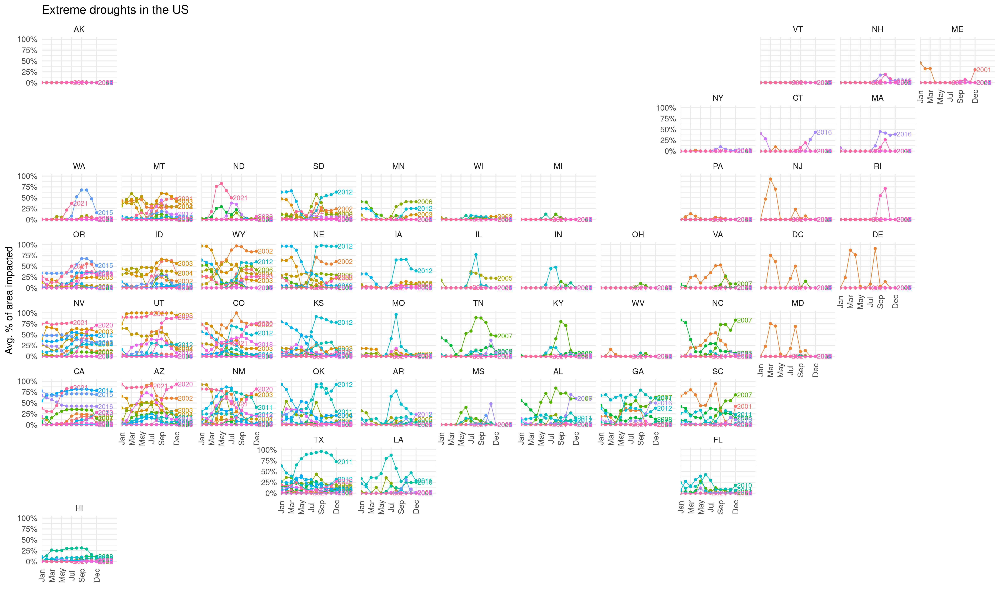
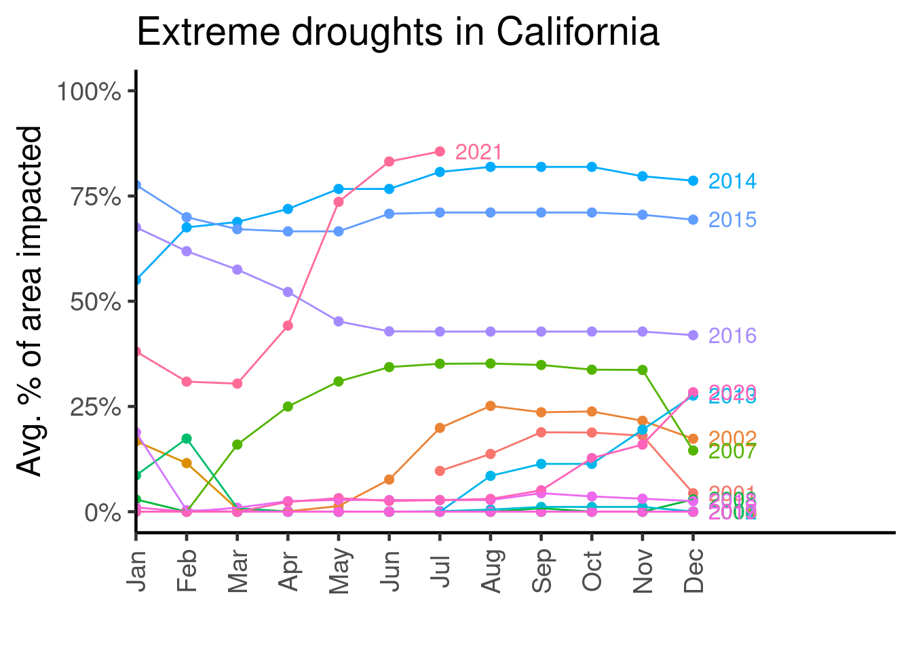

This webpage was originally designed to host all of my work for the tidytuesday challenge.
However, as a data scientist, I often need a quick workspace to host all my other statistical analytics. Hence, as my analytical interests are not limited to just tidytuesday datasets, I also use this repo to host a whole range RMarkdown HTML reports.
This webpage was deployed using GitHub Pages and GitHub Actions and divided into years.
Codes are available here.
This dataset is on the voting records of countries in United Nations. The main question that I was interested in answering were, which countries had similar voting patterns in the past and how have those shifted and changed over the years.
The main method used here is time series clustering on the percentage of times that a country has voted yes across all issues raised at the UN.
What I learnt:
funFEM can be a great package for functional clustering. However, setting up the basis functions and the number of clusters requires a bit of exploration, as there will be degeneracy if the two numbers are too close to each other.tidyverse is when wrangling data.Main findings:
Codes are available here.
This original tidytuesday dataset is consist of 5 data. I have chosen to use only one, which is the forest data for it contains the deforestation measurements that I was most interested in.
In this data, deforestation is recorded as net_forest_conversion, in the units of hectares.
The main visualisation used here are plotly.
Some interesting points in producing this plot:
plotly was reliable as always in making interactive visualisations. However, I found these two documentation pages to be confusing.tidyr::complete is a very well designed function. In wrangling the data, there was an issue with the forest data, in that some country’s deforestation values for some years were not recorded. These missing entries in the data meant that I had to complete the data.The solution was simple:
forest %>%
tidyr::complete(expand(., nesting(entity, code), year),
fill = list(net_forest_conversion = NA))In this code chunk:
complete is the main action to be performed on the dataexpand(...) will then have its unique values expanded (in the sense of a Cartesian set product).nesting looks into the both the entity and code columns (which stand for the country name and the country’s 3-letters ISO code) and extract out their unique combinations within the data. Its placement within the expand(...) function was the key here, because each entity can only have one code and vice versa. The use of nesting keeps both columns in the final output.fill=... argument then specifies exactly what needs to go into every column.python, but as this post suggests, it is much more manual and require a specific combination of functions.Click and drag the globe to interact with this map.
subforest = read_csv(file = "2021-04-06-deforestation/subforest.csv")
fig <- plot_ly(
subforest,
type = 'choropleth',
locations = ~code,
z = ~net_forest_conversion_log10,
text = ~entity,
frame = ~year,
colors = "RdYlGn") %>%
layout(
geo = list(projection = list(type = "orthographic")),
showlegend = FALSE)
figMain findings:
Codes are available here.
This dataset records the animal rescued around the city of London. The main aim of this analysis is to visualise the spatial distribution of the animal types around the city.
The main visualisation packages used here were plotly and Mapbox.
Some interesting points in producing this plot:
plotly (yyds!) package in R offers a good interface to Mapbox, and it is what I chose for my final visualisation.mapdeck (link) package. It has a slightly different look to what plotly offers but could be just as good.Click the legend to interact with the map, e.g. you can double click “fox” to only display foxes around the city.
subdata = readRDS(file = "2021-06-29-animal-rescues/sub_animal_rescues.rds")
Sys.setenv('MAPBOX_TOKEN' = Sys.getenv('MAPBOX_AUTH'))
fig = subdata %>%
plot_mapbox(lat = ~latitude, lon = ~longitude,
split = ~animal_type,
size = 2,
mode = 'scattermapbox',
hoverinfo = 'animal_type')
fig = fig %>%
layout(title = 'Animals rescued around London',
font = list(color='white'),
plot_bgcolor = '#191A1A',
paper_bgcolor = '#191A1A',
mapbox = list(style = 'dark',
zoom = 7,
center = list(
lat = median(subdata$latitude),
lon = median(subdata$longitude))),
legend = list(orientation = 'h',
font = list(size = 8)),
margin = list(l = 25, r = 25,
b = 25, t = 25,
pad = 2))
figMain findings:
Codes are available here.
This data is a bit hard to evaluate because there are different levels of droughts:
The main variables indicating droughts are:
The data is recorded on a weekly scale between 2001 July and 2021 July. Note that these percentages do not sum to 100%.
For now, I looked into only extreme drought and the percentage of area impacted. For plotting purposes, I also averaged the percentage on a monthly scale. It is obvious that the areas impacted are spatially correlated.
subdata2 = read_rds(file = "2021-07-20-droughts/subset_drought_data.rds")
fig <- plot_ly(
data = subdata2 %>%
dplyr::filter(drought_lvl == "D3"),
type = 'choropleth',
locationmode = 'USA-states',
locations = ~state_abb,
z = ~avg_area_pct,
frame = ~time,
color = ~avg_area_pct,
zauto = FALSE,
zmin = 0,
zmax = 100) %>%
layout(
title = "Extreme droughts in the US",
geo = list(
scope = 'usa'),
showlegend = FALSE) %>%
colorbar(title = "Avg. % of area impacted")
figgeofacetI think geofacet is a great package for visualisations. It offers a twist on the usual facet_wrap, and places each facet based on the geographical location of the states being plotted. When using this package with ggplotly, I would recommend using theme_minimal to hide the excess facets (due to how the package is setup).
p = subdata2 %>%
dplyr::filter(drought_lvl == "D3") %>%
ggplot(aes(x = month,
y = avg_area_pct,
colour = factor(year),
label = year)) +
geom_point(size = 2) +
geom_dl(method = list("last.points"), position = position_nudge(x = 0.3), size = 3) +
geom_line(aes(group = year)) +
scale_x_discrete(expand = c(0, 0, 0, 4),
breaks = c("Jan", "Mar", "May", "Jul", "Sep", "Dec")) +
scale_y_continuous(limits = c(0, 100),
n.breaks = 5,
labels = scales::percent_format(accuracy = 1, scale = 1)) +
guides(colour = "none") +
facet_geo(~state_abb, grid = "us_state_grid2") +
labs(title = "Extreme droughts in the US",
x = "",
y = "Avg. % of area impacted") +
theme_minimal(18) +
theme(axis.text.x = element_text(angle = 90, vjust = 0.5))
p
subdata2 %>%
dplyr::filter(drought_lvl == "D3",
state_abb == "CA") %>%
ggplot(aes(x = month,
y = avg_area_pct,
colour = factor(year),
label = year)) +
geom_point(size = 2) +
geom_dl(method = list("last.points"), position = position_nudge(x = 0.3), size = 3) +
geom_line(aes(group = year)) +
scale_x_discrete(expand = c(0, 0, 0, 4)) +
scale_y_continuous(limits = c(0, 100),
n.breaks = 5,
labels = scales::percent_format(accuracy = 1, scale = 1)) +
guides(colour = "none") +
labs(x = "",
y = "Avg. % of area impacted",
title = "Extreme droughts in California") +
theme_classic(18) +
theme(axis.text.x = element_text(angle = 90, vjust = 0.5))